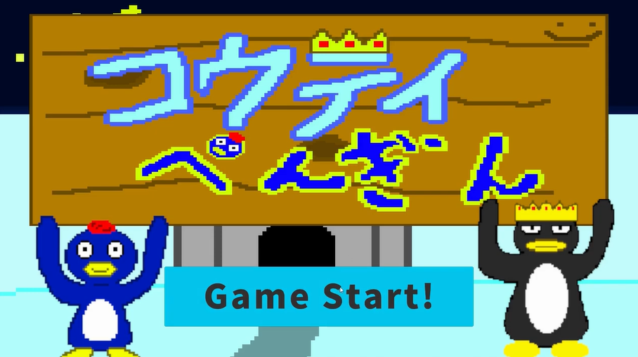

GAME WORKS ／ 長屋晴太の作品
コウテイぺんぎん
2Dアクションゲーム
このゲームの主人公は、『ぺんさんど』という名前のペンギンです。 ぺんさんどの目標は、“皇帝ペンギン様に褒められること”。 それ以外、何もいりません。
TECH POINT（技術のポイント）
4人チームで、メインシステムとプロジェクトの統合を担当。ゲームジャムの期間後も制作を続け、遊べる形に仕上げた。
- DATE（制作時期）
- 2025/07
- TEAM（人数）
- 4人チーム
- ROLE（担当）
- メインシステム プロジェクト統合
- TOOLS（使った技術）
- Unity ／ C#